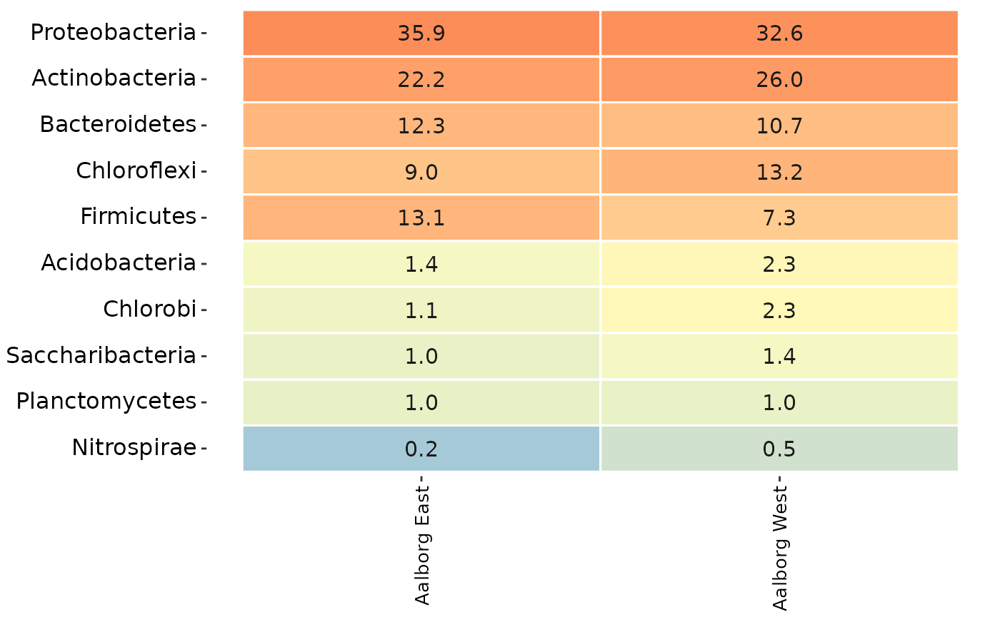
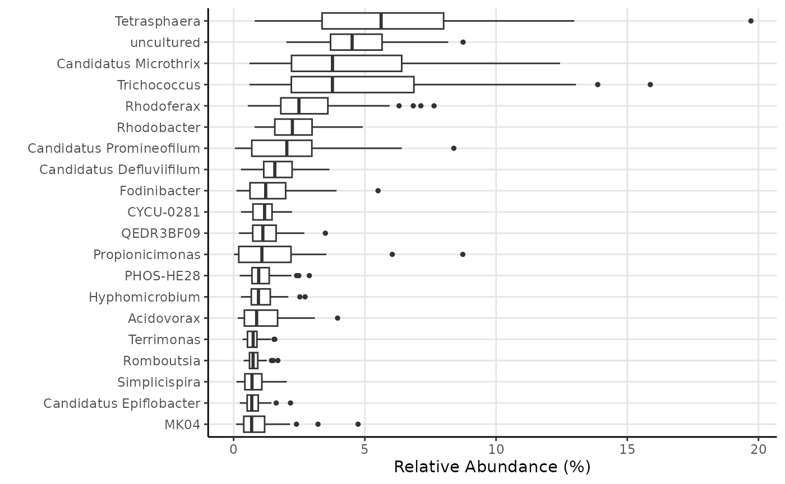
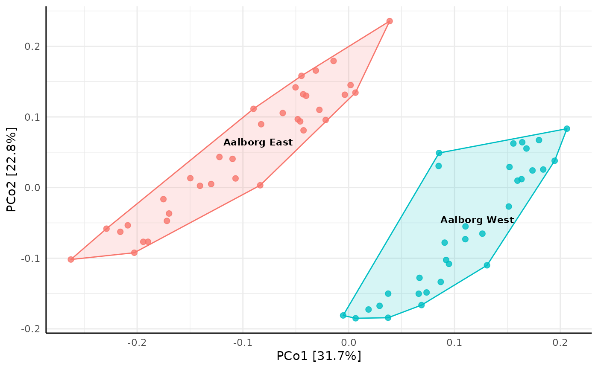
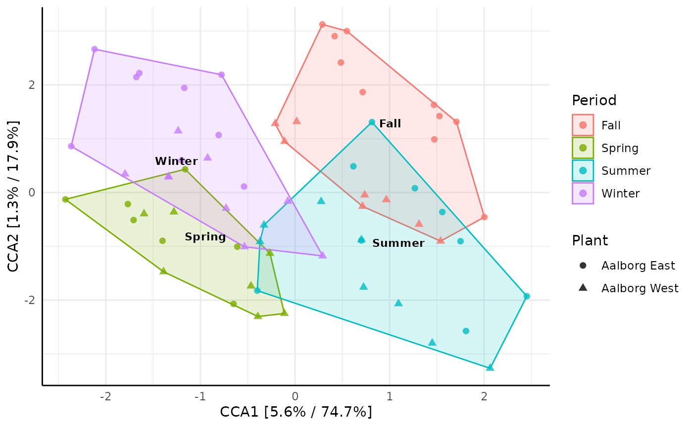

This is a short guide to the basics of ampvis2, how to load data, as well as a few basic visualisation functions using example data. A complete explanation of all functions, their purpose, different arguments and examples can be found in the Functions tab.
Installation
Install ampvis2 as described on the home page:
install.packages("remotes")
remotes::install_github("kasperskytte/ampvis2", Ncpus = 6)Alternatively use the RStudio docker image with ampvis2 preinstalled as described on the home page.
Loading data
The first step is always to import some data by using the amp_load function. The amp_load function is quite flexible and auto-detects several different formats, including csv or excel files, BIOM files, or even R objects directly. As a minimum, you always need to import an abundance table with counts of OTU’s/ASV’s per sample, the rest are optional, but any useful analysis involves loading at least some sample metadata and taxonomy too. Refer to the amp_load help page for details. A simple example would be:
library(ampvis2)
d <- amp_load(
otutable = "path/to/otutable.csv",
metadata = "path/to/samplemetadata.xlsx",
taxonomy = "path/to/taxonomy.csv"
)The amp_load function also supports importing data directly from any of the commonly used amplicon processing pipelines like QIIME, mothur, USEARCH, and DADA2. To import data in the BIOM format from QIIME and mothur (through the make.biom script), for example, simply supply the path to the .biom file to the otutable argument.
The data is then loaded and combined into a single ampvis2 class object by the amp_load() function, which makes the workflow a bit simpler as everything is performed on a single object and can be manipulated by dedicated functions. The data structure used in ampvis2 is inspired by that of the phyloseq R package, but instead of being an abstract S4 class object it’s a simple list of data frames. The individual elements of the object is otherwise the same and resembles that of a typical amplicon data set (otutable, metadata, taxonomy, FASTA sequences, tree). Below is a simple illustration of the data structure and typical workflow of ampvis2:
Filtering and subsetting
With the ampvis2 package comes a large example data set with 573 samples taken from the activated sludge from 55 Danish Wastewater Treatment Plants in the period 2006-2013, which can be loaded with data("MiDAS"). Simply typing the name of any ampvis2 object in the console will show a short summary of the data:
data("MiDAS")
MiDAS## ampvis2 object with 5 elements.
## Summary of OTU table:
## Samples OTUs Total#Reads Min#Reads Max#Reads Median#Reads
## 658 14969 20890850 10480 46264 31800
## Avg#Reads
## 31749.01
##
## Assigned taxonomy:
## Kingdom Phylum Class Order Family
## 14969(100%) 14477(96.71%) 12737(85.09%) 11470(76.63%) 9841(65.74%)
## Genus Species
## 7380(49.3%) 28(0.19%)
##
## Metadata variables: 5
## SampleID, Plant, Date, Year, PeriodIf you have loaded the raw DNA sequences of the OTUs from a FASTA file (with the fasta = argument) you can also get a short summary by typing the name of the ampvis2 object followed by $refseq:
MiDAS$refseq## 14969 DNA sequences in binary format stored in a list.
##
## Mean sequence length: 472.922
## Shortest sequence: 425
## Longest sequence: 525
##
## Labels:
## OTU_1
## OTU_2
## OTU_3
## OTU_4
## OTU_5
## OTU_6
## ...
##
## Base composition:
## a c g t
## 0.261 0.225 0.319 0.194
## (Total: 7.08 Mb)The loaded data can be subsetted based on variables in the metadata using the amp_subset_samples() function, which can then be stored as a new object and analysed separately:
MiDASsubset <- amp_subset_samples(
MiDAS,
Plant %in% c("Aalborg West", "Aalborg East")
)## 590 samples and 5512 OTUs have been filtered
## Before: 658 samples and 14969 OTUs
## After: 68 samples and 9457 OTUsor for a more complex subset, you can subset based on two or more variables using “&” to separate the conditions, or simply use the function more than once. The “!” (logical NOT operator) can be thought of as “except” and is useful to remove fx outliers. Furthermore, the minreads = 10000 argument removes any sample(s) with total amount of reads below the chosen threshold:
MiDASsubset <- amp_subset_samples(
MiDAS,
Plant %in% c("Aalborg West", "Aalborg East") & !SampleID %in% c("16SAMP-749"),
minreads = 10000
)## 591 samples and 5539 OTUs have been filtered
## Before: 658 samples and 14969 OTUs
## After: 67 samples and 9430 OTUsThe amp_subset_taxa() function instead subsets based on the taxonomy, where you simply provide a vector with the taxa you are interested in, separated by a comma:
MiDAS_Chloroflexi_Actinobacteria <- amp_subset_taxa(
MiDAS,
c("p__Chloroflexi", "p__Actinobacteria")
)## 12245 OTUs have been filtered
## Before: 14969 OTUs
## After: 2724 OTUsThe taxonomic rank is indicated by fx "p__" for phylum and "g__" for genus etc, followed by the name of the taxon (case-sensitive, first letter almost always capital). To filter individual OTUs simply provide the OTU name(s) as-is in a vector, fx c("OTU_1206").
Heatmap
All ampvis2 plots are generated using the ggplot2 package. You can change the look of the plots to better suit your needs, add more layers to the plots and use other ggplot2 functions in combination with ampvis plots if needed. Refer to the ggplot2 documentation for more information. amp_heatmap() by default aggregates to phylum level and shows the top 10 phyla, ordered by mean read abundance across all samples:
amp_heatmap(
MiDASsubset,
group_by = "Plant"
)
There are many arguments you can use to suit your needs, for a full list see the reference (click the function names to go to its reference page). For example, you can manually select the level at which to aggregate, how many to show, add additional higher level taxonomic information, group the samples differently by the metadata, hide the values, change the colors and scaling, and much more. You can also adjust the text labels for better readability or adjust the positioning of the legend (adjusting ggplot2 plots is always done with “+” after the actual ampvis2 function):
amp_heatmap(MiDASsubset,
group_by = "Plant",
facet_by = "Year",
tax_aggregate = "Genus",
tax_add = "Phylum",
tax_show = 25,
color_vector = c("white", "darkred"),
plot_colorscale = "sqrt",
plot_values = FALSE) +
theme(axis.text.x = element_text(angle = 45, size=10, vjust = 1),
axis.text.y = element_text(size=8),
legend.position="right")Boxplot
amp_boxplot() generates boxplots, again ordered by mean read abundance across all samples:
amp_boxplot(MiDASsubset)
The arguments you can provide are similar to those used in amp_heatmap() and other ampvis2 functions:
amp_boxplot(
MiDASsubset,
group_by = "Period",
tax_show = 5,
tax_add = "Phylum"
)
Ordination
The amp_ordinate() function has been expanded to support 7 different ordination methods, various data transformations and interactive plots by using Plotly. By default any OTU with an abundance no higher than 0.1% in any sample is removed, which drastically improves the calculation time. You can of course adjust this threshold manually by changing the filter_species = 0.1 argument. Other than this, there are only four main arguments that are involved in the actual calculations, the rest are just various plotting features. These four are type = "", transform = "", distmeasure = "", and lastly constrain = "" for constrained ordination (only used in Redundancy Analysis (RDA) or Canonical Correspondence Analysis (CCA)).
When analysing microbial community composition data it is recommended to use the Hellinger transformation (see Legendre et al, 2001 or Numerical Ecology for details) for most types of ordination methods except the distance-based ordination methods (Principal Coordinates Analysis (PCoA) and non-Metric Multidimensional Scaling (nMDS)), where you also have to select a distance measure manually by the distmeasure = "" argument, for example Bray-Curtis dissimilarities:
amp_ordinate(
MiDASsubset,
type = "pcoa",
distmeasure = "bray",
sample_color_by = "Plant",
sample_colorframe = TRUE,
sample_colorframe_label = "Plant"
) +
theme(legend.position = "blank")
It is also possible to track changes over time by setting the sample_trajectory and sample_trajectory_group arguments, to for example reveal temporal patterns per WWTP:
amp_ordinate(
MiDASsubset,
type = "pcoa",
distmeasure = "bray",
sample_color_by = "Plant",
sample_colorframe_label = "Plant",
sample_trajectory = "Date",
sample_trajectory_group = "Plant"
)
And lastly an example of constrained ordination by Canonical Correspondence Analysis (CCA), which in this case reveals how samples taken at different seasonal periods (constrain = "Period") of the year can explain the data:
ordinationresult <- amp_ordinate(
MiDASsubset,
type = "CCA",
constrain = "Period",
transform = "Hellinger",
sample_color_by = "Period",
sample_shape_by = "Plant",
sample_colorframe = TRUE,
sample_colorframe_label = "Period",
detailed_output = TRUE
)
ordinationresult$plot
Notice that the plot can be saved as a more detailed object (detailed_output = TRUE), so additional details about the ordination result can be obtained for evaluation, fx a screeplot by ordinationresult$screeplot or some more raw data by ordinationresult$model.
Read more
There are numerous other functions to try out as well as complete documentation for each function highlighted above. Go explore in the Functions tab.